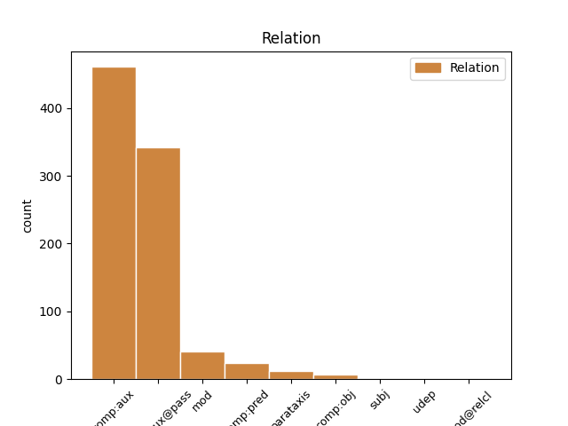
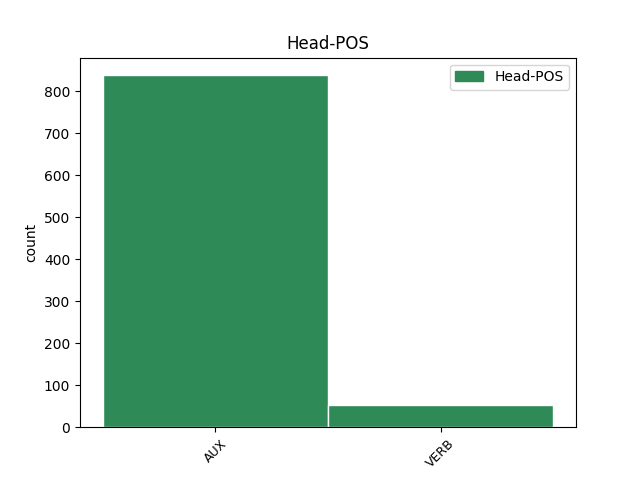
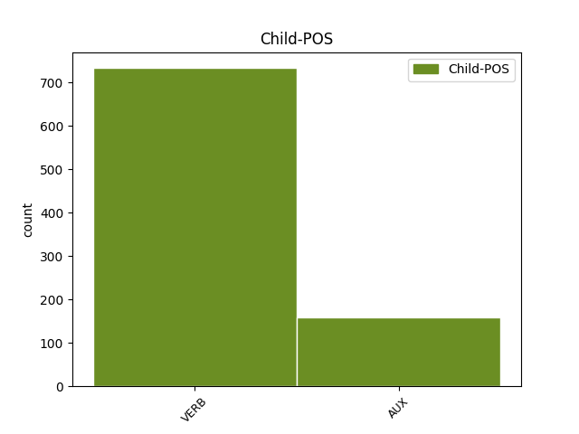

Distribution of features within this leaf



Agreement Rules sorted by frequency.
- When the dependent token is the complement for auxiliary(comp:aux@pass) of the head token, and the head token is AUX and the dependent token is VERB.
1 Diversi _ _ _ _ 0 _ _ _
2 " _ _ _ _ 0 _ _ _
3 gruppi _ _ _ _ 0 _ _ _
4 di _ _ _ _ 0 _ _ _
5 teorie _ _ _ _ 0 _ _ _
6 " _ _ _ _ 0 _ _ _
7 sono _ _ _ _ 0 _ _ _
8 stati essere AUX VA Gender=Masc|Number=Plur|Tense=Past|VerbForm=Part 0 _ _ _
9 anche _ _ _ _ 0 _ _ _
10 proposti proporre VERB V Gender=Masc|Number=Plur|Tense=Past|VerbForm=Part 8 comp:aux@pass _ SpaceAfter=No
11 . _ _ _ _ 0 _ _ _
1 In _ _ _ _ 0 _ _ _
2 gli _ _ _ _ 0 _ _ _
3 anni _ _ _ _ 0 _ _ _
4 1593 _ _ _ _ 0 _ _ _
5 e _ _ _ _ 0 _ _ _
6 1594 _ _ _ _ 0 _ _ _
7 , _ _ _ _ 0 _ _ _
8 quando _ _ _ _ 0 _ _ _
9 i _ _ _ _ 0 _ _ _
10 teatri _ _ _ _ 0 _ _ _
11 rimasero rimanere VERB V Mood=Ind|Number=Plur|Person=3|Tense=Past|VerbForm=Fin 0 _ _ _
12 chiusi chiudere VERB V Mood=Ind|Number=Sing|Person=1|Tense=Past|VerbForm=Fin 11 comp:pred _ _
13 a _ _ _ _ 0 _ _ _
14 causa _ _ _ _ 0 _ _ _
15 di _ _ _ _ 0 _ _ _
16 la _ _ _ _ 0 _ _ _
17 peste _ _ _ _ 0 _ _ _
18 , _ _ _ _ 0 _ _ _
19 Shakespeare _ _ _ _ 0 _ _ _
20 pubblicò _ _ _ _ 0 _ _ _
21 due _ _ _ _ 0 _ _ _
22 poemi _ _ _ _ 0 _ _ _
23 narrativi _ _ _ _ 0 _ _ _
24 da _ _ _ _ 0 _ _ _
25 il _ _ _ _ 0 _ _ _
26 tema _ _ _ _ 0 _ _ _
27 erotico _ _ _ _ 0 _ _ _
28 , _ _ _ _ 0 _ _ _
29 Venere _ _ _ _ 0 _ _ _
30 e _ _ _ _ 0 _ _ _
31 Adone _ _ _ _ 0 _ _ _
32 e _ _ _ _ 0 _ _ _
33 il _ _ _ _ 0 _ _ _
34 ratto _ _ _ _ 0 _ _ _
35 di _ _ _ _ 0 _ _ _
36 Lucrezia _ _ _ _ 0 _ _ _
37 . _ _ _ _ 0 _ _ _
1 Alfred _ _ _ _ 0 _ _ _
2 Pollard _ _ _ _ 0 _ _ _
3 definì definire VERB V Mood=Ind|Number=Sing|Person=3|Tense=Past|VerbForm=Fin 0 _ _ _
4 alcuni _ _ _ _ 0 _ _ _
5 di _ _ _ _ 0 _ _ _
6 questi _ _ _ _ 0 _ _ _
7 " _ _ _ _ 0 _ _ _
8 bad _ _ _ _ 0 _ _ _
9 quartos _ _ _ _ 0 _ _ _
10 " _ _ _ _ 0 _ _ _
11 dato dare VERB V Gender=Masc|Number=Sing|Tense=Past|VerbForm=Part 3 mod _ _
12 che _ _ _ _ 0 _ _ _
13 erano _ _ _ _ 0 _ _ _
14 testi _ _ _ _ 0 _ _ _
15 adattati _ _ _ _ 0 _ _ _
16 , _ _ _ _ 0 _ _ _
17 parafrasati _ _ _ _ 0 _ _ _
18 e _ _ _ _ 0 _ _ _
19 alterati _ _ _ _ 0 _ _ _
20 e _ _ _ _ 0 _ _ _
21 , _ _ _ _ 0 _ _ _
22 in _ _ _ _ 0 _ _ _
23 alcuni _ _ _ _ 0 _ _ _
24 punti _ _ _ _ 0 _ _ _
25 , _ _ _ _ 0 _ _ _
26 erano _ _ _ _ 0 _ _ _
27 ricostruiti _ _ _ _ 0 _ _ _
28 a _ _ _ _ 0 _ _ _
29 memoria _ _ _ _ 0 _ _ _
30 . _ _ _ _ 0 _ _ _
1 Shakespare _ _ _ _ 0 _ _ _
2 li _ _ _ _ 0 _ _ _
3 mescola mescolare VERB V Mood=Ind|Number=Sing|Person=3|Tense=Pres|VerbForm=Fin 0 _ _ _
4 per _ _ _ _ 0 _ _ _
5 tutta _ _ _ _ 0 _ _ _
6 la _ _ _ _ 0 _ _ _
7 sua _ _ _ _ 0 _ _ _
8 carriera _ _ _ _ 0 _ _ _
9 , _ _ _ _ 0 _ _ _
10 Romeo _ _ _ _ 0 _ _ _
11 e _ _ _ _ 0 _ _ _
12 Giulietta _ _ _ _ 0 _ _ _
13 è essere AUX V Mood=Ind|Number=Sing|Person=3|Tense=Pres|VerbForm=Fin 3 mod _ _
14 forse _ _ _ _ 0 _ _ _
15 l' _ _ _ _ 0 _ _ _
16 esempio _ _ _ _ 0 _ _ _
17 migliore _ _ _ _ 0 _ _ _
18 di _ _ _ _ 0 _ _ _
19 questa _ _ _ _ 0 _ _ _
20 fusione _ _ _ _ 0 _ _ _
21 di _ _ _ _ 0 _ _ _
22 stili _ _ _ _ 0 _ _ _
23 . _ _ _ _ 0 _ _ _
1 Anche _ _ _ _ 0 _ _ _
2 se _ _ _ _ 0 _ _ _
3 non _ _ _ _ 0 _ _ _
4 sappiamo sapere VERB V Mood=Ind|Number=Plur|Person=1|Tense=Pres|VerbForm=Fin 0 _ _ _
5 quanto _ _ _ _ 0 _ _ _
6 le _ _ _ _ 0 _ _ _
7 recenti _ _ _ _ 0 _ _ _
8 innovazioni _ _ _ _ 0 _ _ _
9 tecnologiche _ _ _ _ 0 _ _ _
10 stiano stare AUX VA Mood=Sub|Number=Plur|Person=3|Tense=Pres|VerbForm=Fin 4 comp:obj _ _
11 contribuendo _ _ _ _ 0 _ _ _
12 a _ _ _ _ 0 _ _ _
13 il _ _ _ _ 0 _ _ _
14 nostro _ _ _ _ 0 _ _ _
15 benessere _ _ _ _ 0 _ _ _
16 , _ _ _ _ 0 _ _ _
17 almeno _ _ _ _ 0 _ _ _
18 sappiamo _ _ _ _ 0 _ _ _
19 che _ _ _ _ 0 _ _ _
20 , _ _ _ _ 0 _ _ _
21 diversamente _ _ _ _ 0 _ _ _
22 da _ _ _ _ 0 _ _ _
23 l' _ _ _ _ 0 _ _ _
24 ondata _ _ _ _ 0 _ _ _
25 di _ _ _ _ 0 _ _ _
26 innovazioni _ _ _ _ 0 _ _ _
27 finanziarie _ _ _ _ 0 _ _ _
28 che _ _ _ _ 0 _ _ _
29 hanno _ _ _ _ 0 _ _ _
30 segnato _ _ _ _ 0 _ _ _
31 l' _ _ _ _ 0 _ _ _
32 economia _ _ _ _ 0 _ _ _
33 globale _ _ _ _ 0 _ _ _
34 pre _ _ _ _ 0 _ _ _
35 - _ _ _ _ 0 _ _ _
36 crisi _ _ _ _ 0 _ _ _
37 , _ _ _ _ 0 _ _ _
38 l' _ _ _ _ 0 _ _ _
39 effetto _ _ _ _ 0 _ _ _
40 è _ _ _ _ 0 _ _ _
41 positivo _ _ _ _ 0 _ _ _
42 . _ _ _ _ 0 _ _ _
1 Tuttavia _ _ _ _ 0 _ _ _
2 , _ _ _ _ 0 _ _ _
3 ora _ _ _ _ 0 _ _ _
4 , _ _ _ _ 0 _ _ _
5 il _ _ _ _ 0 _ _ _
6 documento _ _ _ _ 0 _ _ _
7 è _ _ _ _ 0 _ _ _
8 andato andare AUX VA Gender=Masc|Number=Sing|Tense=Past|VerbForm=Part 0 _ _ _
9 perduto perdere VERB V Gender=Masc|Number=Sing|Tense=Past|VerbForm=Part 8 comp:aux _ _
10 e _ _ _ _ 0 _ _ _
11 gli _ _ _ _ 0 _ _ _
12 studiosi _ _ _ _ 0 _ _ _
13 non _ _ _ _ 0 _ _ _
14 sono _ _ _ _ 0 _ _ _
15 d' _ _ _ _ 0 _ _ _
16 accordo _ _ _ _ 0 _ _ _
17 riguardo _ _ _ _ 0 _ _ _
18 la _ _ _ _ 0 _ _ _
19 sua _ _ _ _ 0 _ _ _
20 autenticità _ _ _ _ 0 _ _ _
21 . _ _ _ _ 0 _ _ _
1 I _ _ _ _ 0 _ _ _
2 teatri _ _ _ _ 0 _ _ _
3 pubblici _ _ _ _ 0 _ _ _
4 di _ _ _ _ 0 _ _ _
5 Londra _ _ _ _ 0 _ _ _
6 furono essere AUX VA Mood=Ind|Number=Plur|Person=3|Tense=Past|VerbForm=Fin 0 _ _ _
7 ripetutamente _ _ _ _ 0 _ _ _
8 chiusi _ _ _ _ 0 _ _ _
9 durante _ _ _ _ 0 _ _ _
10 l' _ _ _ _ 0 _ _ _
11 estesa _ _ _ _ 0 _ _ _
12 epidemia _ _ _ _ 0 _ _ _
13 di _ _ _ _ 0 _ _ _
14 peste _ _ _ _ 0 _ _ _
15 ( _ _ _ _ 0 _ _ _
16 un _ _ _ _ 0 _ _ _
17 totale _ _ _ _ 0 _ _ _
18 di _ _ _ _ 0 _ _ _
19 oltre _ _ _ _ 0 _ _ _
20 60 _ _ _ _ 0 _ _ _
21 mesi _ _ _ _ 0 _ _ _
22 di _ _ _ _ 0 _ _ _
23 chiusura _ _ _ _ 0 _ _ _
24 tra _ _ _ _ 0 _ _ _
25 maggio _ _ _ _ 0 _ _ _
26 di _ _ _ _ 0 _ _ _
27 il _ _ _ _ 0 _ _ _
28 1603 _ _ _ _ 0 _ _ _
29 e _ _ _ _ 0 _ _ _
30 febbraio _ _ _ _ 0 _ _ _
31 di _ _ _ _ 0 _ _ _
32 il _ _ _ _ 0 _ _ _
33 1610 _ _ _ _ 0 _ _ _
34 ) _ _ _ _ 0 _ _ _
35 , _ _ _ _ 0 _ _ _
36 ciò _ _ _ _ 0 _ _ _
37 significò significare VERB V Mood=Ind|Number=Sing|Person=3|Tense=Past|VerbForm=Fin 6 mod _ _
38 che _ _ _ _ 0 _ _ _
39 non _ _ _ _ 0 _ _ _
40 ci _ _ _ _ 0 _ _ _
41 furono _ _ _ _ 0 _ _ _
42 rappresentazioni _ _ _ _ 0 _ _ _
43 teatrali _ _ _ _ 0 _ _ _
44 . _ _ _ _ 0 _ _ _
1 " _ _ _ _ 0 _ _ _
2 Per _ _ _ _ 0 _ _ _
3 arrivare _ _ _ _ 0 _ _ _
4 a _ _ _ _ 0 _ _ _
5 la _ _ _ _ 0 _ _ _
6 verità _ _ _ _ 0 _ _ _
7 " _ _ _ _ 0 _ _ _
8 , _ _ _ _ 0 _ _ _
9 ha avere AUX VA Mood=Ind|Number=Sing|Person=3|Tense=Pres|VerbForm=Fin 24 parataxis _ _
10 scritto _ _ _ _ 0 _ _ _
11 in _ _ _ _ 0 _ _ _
12 la _ _ _ _ 0 _ _ _
13 prefazione _ _ _ _ 0 _ _ _
14 a _ _ _ _ 0 _ _ _
15 Le _ _ _ _ 0 _ _ _
16 Lys _ _ _ _ 0 _ _ _
17 dans _ _ _ _ 0 _ _ _
18 la _ _ _ _ 0 _ _ _
19 Vallée _ _ _ _ 0 _ _ _
20 , _ _ _ _ 0 _ _ _
21 " _ _ _ _ 0 _ _ _
22 gli _ _ _ _ 0 _ _ _
23 scrittori _ _ _ _ 0 _ _ _
24 usano usare VERB V Mood=Ind|Number=Plur|Person=3|Tense=Pres|VerbForm=Fin 0 _ _ _
25 qualsiasi _ _ _ _ 0 _ _ _
26 strumento _ _ _ _ 0 _ _ _
27 letterario _ _ _ _ 0 _ _ _
28 che _ _ _ _ 0 _ _ _
29 sembra _ _ _ _ 0 _ _ _
30 capace _ _ _ _ 0 _ _ _
31 di _ _ _ _ 0 _ _ _
32 dare _ _ _ _ 0 _ _ _
33 la _ _ _ _ 0 _ _ _
34 maggior _ _ _ _ 0 _ _ _
35 intensità _ _ _ _ 0 _ _ _
36 vitale _ _ _ _ 0 _ _ _
37 a _ _ _ _ 0 _ _ _
38 i _ _ _ _ 0 _ _ _
39 propri _ _ _ _ 0 _ _ _
40 personaggi _ _ _ _ 0 _ _ _
41 " _ _ _ _ 0 _ _ _
42 . _ _ _ _ 0 _ _ _
1 Delegare _ _ _ _ 0 _ _ _
2 il _ _ _ _ 0 _ _ _
3 potere _ _ _ _ 0 _ _ _
4 politico _ _ _ _ 0 _ _ _
5 lì _ _ _ _ 0 _ _ _
6 dove _ _ _ _ 0 _ _ _
7 effettivamente _ _ _ _ 0 _ _ _
8 vive _ _ _ _ 0 _ _ _
9 la _ _ _ _ 0 _ _ _
10 popolazione _ _ _ _ 0 _ _ _
11 è essere AUX V Mood=Ind|Number=Sing|Person=3|Tense=Pres|VerbForm=Fin 0 _ _ _
12 sempre _ _ _ _ 0 _ _ _
13 allettante allettare VERB V Number=Sing|Tense=Pres|VerbForm=Part 11 comp:pred _ SpaceAfter=No
14 , _ _ _ _ 0 _ _ _
15 e _ _ _ _ 0 _ _ _
16 di _ _ _ _ 0 _ _ _
17 solito _ _ _ _ 0 _ _ _
18 efficace _ _ _ _ 0 _ _ _
19 . _ _ _ _ 0 _ _ _
1 " _ _ _ _ 0 _ _ _
2 Quello _ _ _ _ 0 _ _ _
3 che _ _ _ _ 0 _ _ _
4 Balzac _ _ _ _ 0 _ _ _
5 ha _ _ _ _ 0 _ _ _
6 iniziato _ _ _ _ 0 _ _ _
7 " _ _ _ _ 0 _ _ _
8 , _ _ _ _ 0 _ _ _
9 dice dire VERB V Mood=Ind|Number=Sing|Person=3|Tense=Pres|VerbForm=Fin 14 parataxis _ _
10 Lehan _ _ _ _ 0 _ _ _
11 , _ _ _ _ 0 _ _ _
12 " _ _ _ _ 0 _ _ _
13 Flaubert _ _ _ _ 0 _ _ _
14 ha avere AUX VA Mood=Ind|Number=Sing|Person=3|Tense=Pres|VerbForm=Fin 0 _ _ _
15 aiutato _ _ _ _ 0 _ _ _
16 a _ _ _ _ 0 _ _ _
17 finir _ _ _ _ 0 _ _ _
18 lo _ _ _ _ 0 _ _ _
19 . _ _ _ _ 0 _ _ _
1 " _ _ _ _ 0 _ _ _
2 Il _ _ _ _ 0 _ _ _
3 realismo _ _ _ _ 0 _ _ _
4 non _ _ _ _ 0 _ _ _
5 è essere VERB V Mood=Ind|Number=Sing|Person=3|Tense=Pres|VerbForm=Fin 0 _ _ _
6 se _ _ _ _ 0 _ _ _
7 non _ _ _ _ 0 _ _ _
8 urbano _ _ _ _ 0 _ _ _
9 " _ _ _ _ 0 _ _ _
10 , _ _ _ _ 0 _ _ _
11 osserva osservare VERB V Mood=Ind|Number=Sing|Person=3|Tense=Pres|VerbForm=Fin 5 parataxis _ _
12 il _ _ _ _ 0 _ _ _
13 critico _ _ _ _ 0 _ _ _
14 Peter _ _ _ _ 0 _ _ _
15 Brooks _ _ _ _ 0 _ _ _
16 ; _ _ _ _ 0 _ _ _
1 In _ _ _ _ 0 _ _ _
2 primo _ _ _ _ 0 _ _ _
3 luogo _ _ _ _ 0 _ _ _
4 vorrei volere AUX VM Mood=Cnd|Number=Sing|Person=1|Tense=Pres|VerbForm=Fin 0 _ _ _
5 pregare _ _ _ _ 0 _ _ _
6 la _ _ _ _ 0 _ _ _
7 signora _ _ _ _ 0 _ _ _
8 Commissario _ _ _ _ 0 _ _ _
9 - _ _ _ _ 0 _ _ _
10 e _ _ _ _ 0 _ _ _
11 sono essere AUX VA Mood=Ind|Number=Plur|Person=3|Tense=Pres|VerbForm=Fin 4 parataxis _ _
12 convinto _ _ _ _ 0 _ _ _
13 che _ _ _ _ 0 _ _ _
14 la _ _ _ _ 0 _ _ _
15 mia _ _ _ _ 0 _ _ _
16 richiesta _ _ _ _ 0 _ _ _
17 troverà _ _ _ _ 0 _ _ _
18 un _ _ _ _ 0 _ _ _
19 terreno _ _ _ _ 0 _ _ _
20 fertile _ _ _ _ 0 _ _ _
21 - _ _ _ _ 0 _ _ _
22 di _ _ _ _ 0 _ _ _
23 adoperar _ _ _ _ 0 _ _ _
24 si _ _ _ _ 0 _ _ _
25 affinché _ _ _ _ 0 _ _ _
26 venga _ _ _ _ 0 _ _ _
27 dedicata _ _ _ _ 0 _ _ _
28 maggiore _ _ _ _ 0 _ _ _
29 attenzione _ _ _ _ 0 _ _ _
30 a _ _ _ _ 0 _ _ _
31 la _ _ _ _ 0 _ _ _
32 questione _ _ _ _ 0 _ _ _
33 di _ _ _ _ 0 _ _ _
34 la _ _ _ _ 0 _ _ _
35 sicurezza _ _ _ _ 0 _ _ _
36 in _ _ _ _ 0 _ _ _
37 i _ _ _ _ 0 _ _ _
38 trasporti _ _ _ _ 0 _ _ _
39 su _ _ _ _ 0 _ _ _
40 strada _ _ _ _ 0 _ _ _
41 , _ _ _ _ 0 _ _ _
42 nonché _ _ _ _ 0 _ _ _
43 in _ _ _ _ 0 _ _ _
44 la _ _ _ _ 0 _ _ _
45 navigazione _ _ _ _ 0 _ _ _
46 marittima _ _ _ _ 0 _ _ _
47 e _ _ _ _ 0 _ _ _
48 in _ _ _ _ 0 _ _ _
49 le _ _ _ _ 0 _ _ _
50 acque _ _ _ _ 0 _ _ _
51 interne _ _ _ _ 0 _ _ _
52 . _ _ _ _ 0 _ _ _
1 Il _ _ _ _ 0 _ _ _
2 primo _ _ _ _ 0 _ _ _
3 progetto _ _ _ _ 0 _ _ _
4 di _ _ _ _ 0 _ _ _
5 il _ _ _ _ 0 _ _ _
6 programma _ _ _ _ 0 _ _ _
7 Pericle _ _ _ _ 0 _ _ _
8 è _ _ _ _ 0 _ _ _
9 stato _ _ _ _ 0 _ _ _
10 quindi _ _ _ _ 0 _ _ _
11 realizzato _ _ _ _ 0 _ _ _
12 soltanto _ _ _ _ 0 _ _ _
13 in _ _ _ _ 0 _ _ _
14 l' _ _ _ _ 0 _ _ _
15 ottobre _ _ _ _ 0 _ _ _
16 2002 _ _ _ _ 0 _ _ _
17 e _ _ _ _ 0 _ _ _
18 l' _ _ _ _ 0 _ _ _
19 importo _ _ _ _ 0 _ _ _
20 impegnato _ _ _ _ 0 _ _ _
21 in _ _ _ _ 0 _ _ _
22 il _ _ _ _ 0 _ _ _
23 2002 _ _ _ _ 0 _ _ _
24 è essere AUX VA Mood=Ind|Number=Sing|Person=3|Tense=Pres|VerbForm=Fin 0 _ _ _
25 stato _ _ _ _ 0 _ _ _
26 di _ _ _ _ 0 _ _ _
27 poco _ _ _ _ 0 _ _ _
28 inferiore _ _ _ _ 0 _ _ _
29 a _ _ _ _ 0 _ _ _
30 il _ _ _ _ 0 _ _ _
31 40 _ _ _ _ 0 _ _ _
32 % _ _ _ _ 0 _ _ _
33 di _ _ _ _ 0 _ _ _
34 la _ _ _ _ 0 _ _ _
35 dotazione _ _ _ _ 0 _ _ _
36 iniziale _ _ _ _ 0 _ _ _
37 ( _ _ _ _ 0 _ _ _
38 lo _ _ _ _ 0 _ _ _
39 stanziamento _ _ _ _ 0 _ _ _
40 è essere AUX VA Mood=Ind|Number=Sing|Person=3|Tense=Pres|VerbForm=Fin 24 mod _ _
41 stato _ _ _ _ 0 _ _ _
42 ridotto _ _ _ _ 0 _ _ _
43 in _ _ _ _ 0 _ _ _
44 il _ _ _ _ 0 _ _ _
45 corso _ _ _ _ 0 _ _ _
46 di _ _ _ _ 0 _ _ _
47 l' _ _ _ _ 0 _ _ _
48 anno _ _ _ _ 0 _ _ _
49 ) _ _ _ _ 0 _ _ _
50 . _ _ _ _ 0 _ _ _
Disagree Examples:
1 L' _ _ _ _ 0 _ _ _
2 opera _ _ _ _ 0 _ _ _
3 è essere AUX VA Mood=Ind|Number=Sing|Person=3|Tense=Pres|VerbForm=Fin 0 _ _ _
4 protetta proteggere VERB V Gender=Fem|Number=Sing|Tense=Past|VerbForm=Part 3 comp:aux@pass _ _
5 da _ _ _ _ 0 _ _ _
6 il _ _ _ _ 0 _ _ _
7 diritto _ _ _ _ 0 _ _ _
8 d' _ _ _ _ 0 _ _ _
9 autore _ _ _ _ 0 _ _ _
10 e/o _ _ _ _ 0 _ _ _
11 da _ _ _ _ 0 _ _ _
12 le _ _ _ _ 0 _ _ _
13 altre _ _ _ _ 0 _ _ _
14 leggi _ _ _ _ 0 _ _ _
15 applicabili _ _ _ _ 0 _ _ _
16 . _ _ _ _ 0 _ _ _
1 Un' _ _ _ _ 0 _ _ _
2 opera _ _ _ _ 0 _ _ _
3 che _ _ _ _ 0 _ _ _
4 costituisce _ _ _ _ 0 _ _ _
5 Collezione _ _ _ _ 0 _ _ _
6 di _ _ _ _ 0 _ _ _
7 Opere _ _ _ _ 0 _ _ _
8 non _ _ _ _ 0 _ _ _
9 verrà venire AUX VA Mood=Ind|Number=Sing|Person=3|Tense=Fut|VerbForm=Fin 0 _ _ _
10 considerata considerare VERB V Gender=Fem|Number=Sing|Tense=Past|VerbForm=Part 9 comp:aux@pass _ _
11 opera _ _ _ _ 0 _ _ _
12 derivata _ _ _ _ 0 _ _ _
13 ( _ _ _ _ 0 _ _ _
14 come _ _ _ _ 0 _ _ _
15 sotto _ _ _ _ 0 _ _ _
16 definita _ _ _ _ 0 _ _ _
17 ) _ _ _ _ 0 _ _ _
18 a _ _ _ _ 0 _ _ _
19 i _ _ _ _ 0 _ _ _
20 fini _ _ _ _ 0 _ _ _
21 di _ _ _ _ 0 _ _ _
22 la _ _ _ _ 0 _ _ _
23 presente _ _ _ _ 0 _ _ _
24 licenza _ _ _ _ 0 _ _ _
25 ; _ _ _ _ 0 _ _ _
1 " _ _ _ _ 0 _ _ _
2 Opera _ _ _ _ 0 _ _ _
3 " _ _ _ _ 0 _ _ _
4 , _ _ _ _ 0 _ _ _
5 l' _ _ _ _ 0 _ _ _
6 opera _ _ _ _ 0 _ _ _
7 di _ _ _ _ 0 _ _ _
8 l' _ _ _ _ 0 _ _ _
9 ingegno _ _ _ _ 0 _ _ _
10 suscettibile _ _ _ _ 0 _ _ _
11 di _ _ _ _ 0 _ _ _
12 protezione _ _ _ _ 0 _ _ _
13 in _ _ _ _ 0 _ _ _
14 forza _ _ _ _ 0 _ _ _
15 di _ _ _ _ 0 _ _ _
16 le _ _ _ _ 0 _ _ _
17 leggi _ _ _ _ 0 _ _ _
18 su _ _ _ _ 0 _ _ _
19 il _ _ _ _ 0 _ _ _
20 diritto _ _ _ _ 0 _ _ _
21 d' _ _ _ _ 0 _ _ _
22 autore _ _ _ _ 0 _ _ _
23 , _ _ _ _ 0 _ _ _
24 la _ _ _ _ 0 _ _ _
25 cui _ _ _ _ 0 _ _ _
26 utilizzazione _ _ _ _ 0 _ _ _
27 è essere AUX VA Mood=Ind|Number=Sing|Person=3|Tense=Pres|VerbForm=Fin 0 _ _ _
28 offerta offrire VERB V Gender=Fem|Number=Sing|Tense=Past|VerbForm=Part 27 comp:aux@pass _ _
29 in _ _ _ _ 0 _ _ _
30 il _ _ _ _ 0 _ _ _
31 rispetto _ _ _ _ 0 _ _ _
32 di _ _ _ _ 0 _ _ _
33 i _ _ _ _ 0 _ _ _
34 termini _ _ _ _ 0 _ _ _
35 di _ _ _ _ 0 _ _ _
36 la _ _ _ _ 0 _ _ _
37 presente _ _ _ _ 0 _ _ _
38 licenza _ _ _ _ 0 _ _ _
39 ; _ _ _ _ 0 _ _ _
1 distribuzione _ _ _ _ 0 _ _ _
2 di _ _ _ _ 0 _ _ _
3 copie _ _ _ _ 0 _ _ _
4 di _ _ _ _ 0 _ _ _
5 l' _ _ _ _ 0 _ _ _
6 opera _ _ _ _ 0 _ _ _
7 o _ _ _ _ 0 _ _ _
8 di _ _ _ _ 0 _ _ _
9 supporti _ _ _ _ 0 _ _ _
10 fonografici _ _ _ _ 0 _ _ _
11 su _ _ _ _ 0 _ _ _
12 cui _ _ _ _ 0 _ _ _
13 l' _ _ _ _ 0 _ _ _
14 opera _ _ _ _ 0 _ _ _
15 è essere AUX VA Mood=Ind|Number=Sing|Person=3|Tense=Pres|VerbForm=Fin 0 _ _ _
16 registrata registrare VERB V Gender=Fem|Number=Sing|Tense=Past|VerbForm=Part 15 comp:aux@pass _ SpaceAfter=No
17 , _ _ _ _ 0 _ _ _
18 comunicazione _ _ _ _ 0 _ _ _
19 a _ _ _ _ 0 _ _ _
20 il _ _ _ _ 0 _ _ _
21 pubblico _ _ _ _ 0 _ _ _
22 , _ _ _ _ 0 _ _ _
23 rappresentazione _ _ _ _ 0 _ _ _
24 , _ _ _ _ 0 _ _ _
25 esecuzione _ _ _ _ 0 _ _ _
26 , _ _ _ _ 0 _ _ _
27 recitazione _ _ _ _ 0 _ _ _
28 o _ _ _ _ 0 _ _ _
29 esposizione _ _ _ _ 0 _ _ _
30 in _ _ _ _ 0 _ _ _
31 pubblico _ _ _ _ 0 _ _ _
32 , _ _ _ _ 0 _ _ _
33 ivi _ _ _ _ 0 _ _ _
34 inclusa _ _ _ _ 0 _ _ _
35 la _ _ _ _ 0 _ _ _
36 trasmissione _ _ _ _ 0 _ _ _
37 audio _ _ _ _ 0 _ _ _
38 digitale _ _ _ _ 0 _ _ _
39 di _ _ _ _ 0 _ _ _
40 l' _ _ _ _ 0 _ _ _
41 opera _ _ _ _ 0 _ _ _
42 , _ _ _ _ 0 _ _ _
43 e _ _ _ _ 0 _ _ _
44 ciò _ _ _ _ 0 _ _ _
45 anche _ _ _ _ 0 _ _ _
46 quando _ _ _ _ 0 _ _ _
47 l' _ _ _ _ 0 _ _ _
48 opera _ _ _ _ 0 _ _ _
49 sia _ _ _ _ 0 _ _ _
50 incorporata _ _ _ _ 0 _ _ _
51 in _ _ _ _ 0 _ _ _
52 collezioni _ _ _ _ 0 _ _ _
53 di _ _ _ _ 0 _ _ _
54 opere _ _ _ _ 0 _ _ _
55 ; _ _ _ _ 0 _ _ _
1 distribuzione _ _ _ _ 0 _ _ _
2 di _ _ _ _ 0 _ _ _
3 copie _ _ _ _ 0 _ _ _
4 di _ _ _ _ 0 _ _ _
5 l' _ _ _ _ 0 _ _ _
6 opera _ _ _ _ 0 _ _ _
7 o _ _ _ _ 0 _ _ _
8 di _ _ _ _ 0 _ _ _
9 supporti _ _ _ _ 0 _ _ _
10 fonografici _ _ _ _ 0 _ _ _
11 su _ _ _ _ 0 _ _ _
12 cui _ _ _ _ 0 _ _ _
13 l' _ _ _ _ 0 _ _ _
14 opera _ _ _ _ 0 _ _ _
15 è _ _ _ _ 0 _ _ _
16 registrata _ _ _ _ 0 _ _ _
17 , _ _ _ _ 0 _ _ _
18 comunicazione _ _ _ _ 0 _ _ _
19 a _ _ _ _ 0 _ _ _
20 il _ _ _ _ 0 _ _ _
21 pubblico _ _ _ _ 0 _ _ _
22 , _ _ _ _ 0 _ _ _
23 rappresentazione _ _ _ _ 0 _ _ _
24 , _ _ _ _ 0 _ _ _
25 esecuzione _ _ _ _ 0 _ _ _
26 , _ _ _ _ 0 _ _ _
27 recitazione _ _ _ _ 0 _ _ _
28 o _ _ _ _ 0 _ _ _
29 esposizione _ _ _ _ 0 _ _ _
30 in _ _ _ _ 0 _ _ _
31 pubblico _ _ _ _ 0 _ _ _
32 , _ _ _ _ 0 _ _ _
33 ivi _ _ _ _ 0 _ _ _
34 inclusa _ _ _ _ 0 _ _ _
35 la _ _ _ _ 0 _ _ _
36 trasmissione _ _ _ _ 0 _ _ _
37 audio _ _ _ _ 0 _ _ _
38 digitale _ _ _ _ 0 _ _ _
39 di _ _ _ _ 0 _ _ _
40 l' _ _ _ _ 0 _ _ _
41 opera _ _ _ _ 0 _ _ _
42 , _ _ _ _ 0 _ _ _
43 e _ _ _ _ 0 _ _ _
44 ciò _ _ _ _ 0 _ _ _
45 anche _ _ _ _ 0 _ _ _
46 quando _ _ _ _ 0 _ _ _
47 l' _ _ _ _ 0 _ _ _
48 opera _ _ _ _ 0 _ _ _
49 sia essere AUX VA Mood=Sub|Number=Sing|Person=3|Tense=Pres|VerbForm=Fin 0 _ _ _
50 incorporata incorporare VERB V Gender=Fem|Number=Sing|Tense=Past|VerbForm=Part 49 comp:aux@pass _ _
51 in _ _ _ _ 0 _ _ _
52 collezioni _ _ _ _ 0 _ _ _
53 di _ _ _ _ 0 _ _ _
54 opere _ _ _ _ 0 _ _ _
55 ; _ _ _ _ 0 _ _ _